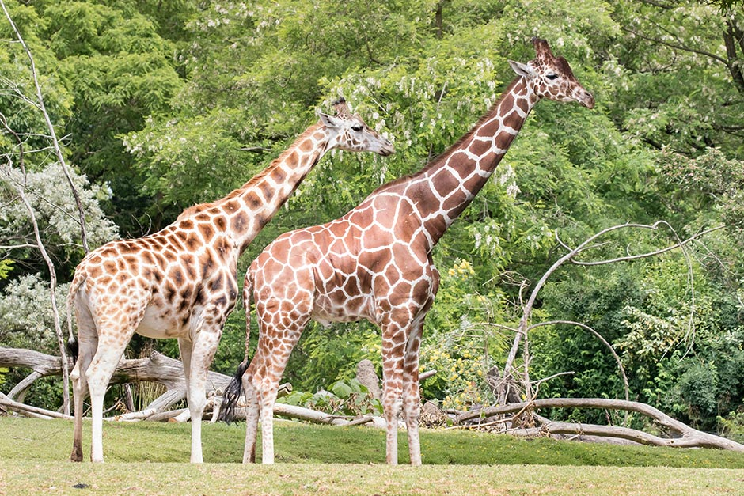

Average Life Expectancy Of A Giraffe
Giraffes have a lifespan that typically ranges between 20 to 25 years in the wild, although some individuals can live even longer in captivity, with lifespans extending to about 28 years. This remarkable longevity is largely influenced by environmental factors such as food availability, predation pressures, and disease, as well as the specific habitat in which they reside.
Captivity
Giraffes in captivity, particularly those in well-maintained zoos or wildlife reserves, tend to live longer due to a controlled environment. They are less exposed to predators and environmental stresses, and they receive regular veterinary care, a steady supply of food, and protection from extreme weather conditions. This more stable environment often allows them to live beyond their average wild lifespan.